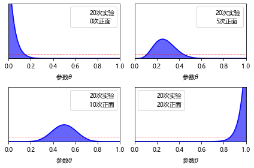
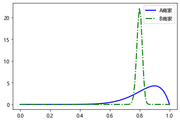
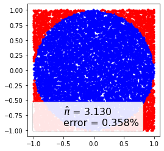
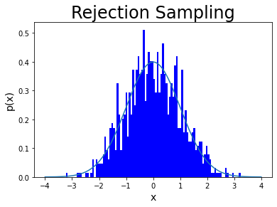
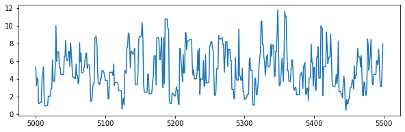
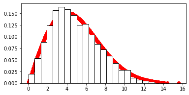
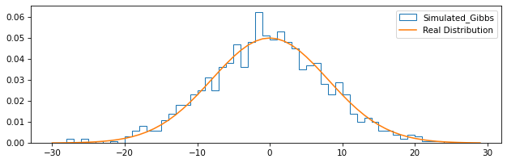
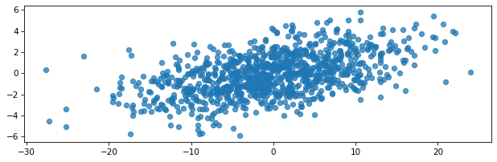

Python-人工智能数学基础 17
17 贝叶斯分析
17.1 贝叶斯分析概述
17.1.2 贝叶斯学派与经典统计学派的争论
统计推断是根据样本信息对总体分布或总体的特征数进行推断，事实上，这经典学派对统计推断的规定，这里的统计推断使用到两种信息：总体信息和样本信息 ；而贝叶斯学派认为，除了上述两种信息以外，统计推断还应该使用第三种信息：先验信息 。
P ( θ ∣ y ) P(\color{red}\theta|\color{blue}y)
P ( θ ∣ y )
统计学派
观察到的数据 被认为是随机的, 因为它们是随机过程的实现, 因此每次观察系统时都会发生变化.
模型参数 被认为是固定的, 参数 的值是未知的, 但它们是固定的, 因此我们对它们进行条件设置.
贝叶斯学派
数据 被认为是固定的, 它们使用的是随机的, 但是一旦它们被拿到手了, 就不会改变.
贝叶斯用概率分布来描述模型参数 的不确定性, 这样一来, 它们就是随机的.
17.1.3 贝叶斯公式
P ( B i ∣ A ) = P ( A ∣ B i ) P ( B i ) P ( A ) = P ( A ∣ B i ) P ( B i ) Σ j = 1 n P ( A ∣ B j ) P ( B j ) , i = 1 , 2 , . . . , n P(B_i|A)=\frac{P(A|B_i)P(B_i)}{P(A)}=\frac{P(A|B_i)P(B_i)}{\Sigma^n_{j=1}P(A|B_j)P(B_j)}, i=1, 2, ..., n
P ( B i ∣ A ) = P ( A ) P ( A ∣ B i ) P ( B i ) = Σ j = 1 n P ( A ∣ B j ) P ( B j ) P ( A ∣ B i ) P ( B i ) , i = 1 , 2 , . . . , n
π ( θ i ∣ x ) = f ( x ∣ θ i ) π ( θ i ) Σ i f ( x ∣ θ i ) π ( θ i ) \pi(\theta_i|x)=\frac{f(x|\theta_i)\pi(\theta_i)}{\Sigma_i f(x|\theta_i)\pi(\theta_i)}
π ( θ i ∣ x ) = Σ i f ( x ∣ θ i ) π ( θ i ) f ( x ∣ θ i ) π ( θ i )
π ( θ ∣ x ) = f ( x ∣ θ ) π ( θ ) ∫ Θ f ( x ∣ θ ) π ( θ ) d θ \pi(\theta|x)=\frac{f(x|\theta)\pi(\theta)}{\int_\Theta f(x|\theta)\pi(\theta)d\theta}
π ( θ ∣ x ) = ∫ Θ f ( x ∣ θ ) π ( θ ) d θ f ( x ∣ θ ) π ( θ )
17.1.4 贝叶斯解释
1 先验信息和先验分布
指抽样之前对所研究的问题的认识, 记为π ( θ ) \pi(\theta) π ( θ )
2 后验分布
一旦获得抽样信息x x x θ \theta θ θ \theta θ π ( θ ∣ x ) \pi(\theta|x) π ( θ ∣ x )
3 共轭先验分布
先验分布的选择具有主观性 , 一般选择无信息先验分布和共轭先验分布
假如由样本x x x π ( θ ∣ x ) \pi(\theta|x) π ( θ ∣ x ) π ( θ ) \pi(\theta) π ( θ ) 相同 的分布类型, 则称π ( θ ) \pi(\theta) π ( θ ) θ \theta θ
走进贝叶斯统计（二）—— 共轭先验分布
例 17.2 (共轭先验的例子 Beta-伯努利分布)
设事件A A A x x x θ \theta θ θ \theta θ n n n
显然x ∼ B ( n , θ ) x\sim B(n, \theta) x ∼ B ( n , θ )
f ( x ∣ θ ) = C n x θ x ( 1 − θ ) n − x f(x|\theta)=C^x_n\theta^x(1-\theta)^{n-x}
f ( x ∣ θ ) = C n x θ x ( 1 − θ ) n − x
假设先验分布为均匀分布U ( 0 , 1 ) U(0,1) U ( 0 , 1 ) π ( θ ) = 1 \pi(\theta)=1 π ( θ ) = 1 θ ∈ ( 0 , 1 ) \theta\in(0,1) θ ∈ ( 0 , 1 )
由贝叶斯公式求后验概率分布:
π ( θ ∣ x ) = Γ ( n + 2 ) Γ ( x + 2 ) Γ ( n − x + 1 ) θ ( x + 1 ) − 1 ( 1 − θ ) ( n − x + 1 ) − 1 \pi(\theta|x)=\frac{\Gamma(n+2)}{\Gamma(x+2)\Gamma(n-x+1)}\theta^{(x+1)-1}(1-\theta)^{(n-x+1)-1}
π ( θ ∣ x ) = Γ ( x + 2 ) Γ ( n − x + 1 ) Γ ( n + 2 ) θ ( x + 1 ) − 1 ( 1 − θ ) ( n − x + 1 ) − 1
上式是参数为x + 1 x+1 x + 1 n − x + 1 n-x+1 n − x + 1 B e t a ( x + 1 , n − x + 1 ) \mathrm{Beta}(x+1, n-x+1) B e t a ( x + 1 , n − x + 1 )
如抛硬币 10 次( n = 1 0 ) (n=10) ( n = 1 0 ) ( x = 5 ) (x=5) ( x = 5 ) B e t a ( 6 , 6 ) \mathrm{Beta}(6,6) B e t a ( 6 , 6 ) B e t a ( α , β ) \mathrm{Beta}(\alpha, \beta) B e t a ( α , β ) E ( X ) = α α + β E(X)=\frac{\alpha}{\alpha+\beta} E ( X ) = α + β α
如何通俗并深刻的理解 beta 分布
例 17.3
分别进行 4 次抛硬币实验, 每次抛 20 下, 抛出正面的次数分别是 0, 5, 10, 20 次, 观察不同的样本信息对先验分布的调整. 先验分布选择B e t a ( 1 , 1 ) \mathrm{Beta}(1, 1) B e t a ( 1 , 1 )
1 2 3 4 5 6 7 8 9 10 11 12 13 14 15 16 17 18 19 20 21 22 23 24 25 26 27 28 29 30 31 32 33 34 35 36 37 38 import matplotlib.pyplot as pltimport scipy.stats as statsimport numpy as np'font.sans-serif' ] = ['Microsoft YaHei' ]'axes.unicode_minus' ] = False 1 20 , 20 , 20 , 20 ]0 , 5 , 10 , 20 ]1 , 1 )]0 , 1 , 100 )for idx, N in enumerate (trials):if idx == 0 :2 , 2 , 1 )else :2 , 2 , idx + 1 )for (a_prior, b_prior), c in zip (beta_params, ('b' )):0 , p_theta_given_y, color=c, alpha=0.6 )1 , 1 ), color='r' , linestyle='--' ,1 , alpha=0.5 )0 , 0 , label='{:d}次实验\n{:d}次正面' .format (N, y), alpha=0 )0 , 1 )0 , 12 )r'参数$\theta$' )False )

例 17.4
同一商品在淘宝中发现了两个不同的商家:
商家 A 有 10 条评论, 9 条好评和 1 条差评
商家 B 有 500 条评论, 400 条好评和 100 条差评
那么应该去选择哪家的商品?
解: 先验分布选择B e t a ( 1 , 1 ) \mathrm{Beta}(1,1) B e t a ( 1 , 1 ) a = 1 , b = 1 a=1, b=1 a = 1 , b = 1
商家 A 试验次数n = 1 0 n=10 n = 1 0 x = 9 x=9 x = 9 B e t a ( 1 0 , 2 ) \mathrm{Beta}(10, 2) B e t a ( 1 0 , 2 )
商家 B 的后验分布为B e t a ( 4 0 1 , 1 0 1 ) \mathrm{Beta}(401, 101) B e t a ( 4 0 1 , 1 0 1 )
1 2 3 4 5 6 7 8 9 10 11 12 13 import matplotlib as mplimport matplotlib.pyplot as pltimport scipy.stats as statsimport numpy as np'font.sans-serif' ] = ['Microsoft YaHei' ]'axes.unicode_minus' ] = False 0 , 1 , 100 )10 , 2 ), color='b' , linestyle='-' , linewidth=2 )401 , 101 ), color='g' , linestyle='-.' , linewidth=2 )u'A 商家' , u'B 商家' ), loc='best' )

Beta 分布可以看作是一个概率的概率分布, 可以看出商家 A 的好评概率均值更高, 但是方差更大
B e t a ( α , β ) \mathrm{Beta}(\alpha, \beta) B e t a ( α , β ) E ( X ) E(X) E ( X )
E ( X ) = α α + β E(X)=\frac{\alpha}{\alpha + \beta}
E ( X ) = α + β α
方差D ( X ) D(X) D ( X )
D ( X ) = α β ( α + β ) 2 ( α + β + 1 ) D(X)=\frac{\alpha\beta}{(\alpha+\beta)^2(\alpha + \beta + 1)}
D ( X ) = ( α + β ) 2 ( α + β + 1 ) α β
高斯-高斯共轭
17.2 MCMC (马尔科夫链蒙特卡罗) 概述
贝叶斯公式简洁直观, 更符合我们对事物的认知.
在贝叶斯分析中, 我们常常需要计算后验分布的期望, 方差等数字特征, 如果先验分布不是共轭先验分布 , 那么后验分布往往不再是标准的分布, 这时后验分布计算涉及很复杂的积分, 这个积分在大部分情况下是不可能进行精确计算的
基于马尔科夫理论 , 使用蒙特卡罗模拟方法 回避后验分布表达式的复杂计算, 创造性地使用MC MC 方法, 直接对后验分布的独立随机样本进行模拟, 再通过分析模拟样本获得均值等相关统计量.
17.2.1 蒙特卡罗方法
刘建平 Pinard-MCMC(一)蒙特卡罗方法
尽管很多问题都难以求解甚至无法用公式准确表达, 但我们可以通过采样来近似模拟, 这就是蒙特卡洛算法的基本思想.
X X X p ( x ) p(x) p ( x ) p ( x ) p(x) p ( x )
例 17.5 随机模拟计算圆周率
随机模拟计算圆周率π \pi π π \pi π
1 2 3 4 5 6 7 8 9 10 11 12 13 14 15 import matplotlib.pyplot as pltimport numpy as np10000 1 , 1 , size=(2 , N)) 2 + y ** 2 ) <= 1 sum () * 4 / N abs ((pi - np.pi) / pi) * 100 'b.' )'r.' )0 , 0 , label='$\hat \pi$ = {:4.3f}\nerror = {:4.3f}%' .format (pi, error), alpha=0 )'square' )True , framealpha=0.9 , fontsize=16 )

在贝叶斯方法中可以利用蒙特卡罗方法对数据进行随机采样, 从而避开后验分布的计算(以频率估算概率)
但如果 X 的概率分布不是常见的分布, 这就意味着我们无法直接得到这些非常见的概率分布的样本集
为了弥补直接抽样法的不足, 冯诺依曼提出取舍抽样法
取舍抽样法采用的是一种迂回的策略. 既然p ( x ) p(x) p ( x ) q ( x ) q(x) q ( x ) p ( x ) ≤ M q ( x ) p(x)\le Mq(x) p ( x ) ≤ M q ( x ) p ( x ) p(x) p ( x )
拒绝采样(reject sampling)原理详解
例 17.6 利用取舍抽样算法, 产生标准正态分布的随机样本
解: 取[-4, 4]上的均匀分布密度函数为参考分布q ( x ) q(x) q ( x ) M = 3 . 5 M=3.5 M = 3 . 5
1 2 3 4 5 6 7 8 9 10 11 12 13 14 15 16 17 18 19 20 21 22 23 24 25 26 27 28 29 30 31 32 33 34 35 36 37 38 39 40 41 42 43 44 45 46 47 48 49 import numpy as npimport matplotlib.pyplot as pltimport mathdef p (x ):"""标准正态分布""" 0 1 return 1 / (math.pi * 2 ) ** 0.5 / sigma * np.exp(-(x - mu) ** 2 / 2 / sigma ** 2 )def q (x ):"""参考分布选用[-4, 4]上的均匀分布""" return np.array([0.125 for i in range (len (x))])4 , 4 , 500 )3.5 1000 """ Set 采样数目 i = 1 Repeat until i = N (1) 从参考分布 q(x)采样得到样本 x (2) 从均匀分布[0, 1]采样得到μ (3) 如果μ ≤ p(x) / (Mq(x)), 那么接受 x, i 自增 1, 否则舍弃 x 可以证明接受的数据样本集 X 服从概率分布 p(x) """ 1 0 while i < N:10 ) 10 ) - 0.5 ) * 8 if any (res): len (x[res])10 len (samples) - 1000 1000 ] 4 , 4 , 500 )100 , density=True , facecolor='blue' )'Rejection Sampling' , fontsize=24 )'x' , fontsize=14 )'p(x)' , fontsize=14 )print (N / count)

0.2864508736751647
17.2.2 马尔科夫链 (Markov Chain)
马尔科夫链(简称马氏链)定义比较简单, 它假设某一时刻状态转移的概率只 依赖于前一个状态
马氏链核心三要素: 1. 状态空间 2. 无记忆性 3. 转移矩阵
刘建平 Pinard-MCMC(二)马尔科夫链
【数之道 18】"马尔可夫链"是什么？了解它只需 5 分钟！
例 17.7
一家连锁汽车租赁公司有 3 处门店, 租车和还车都可以选择任何一个门店, 从不同门店借出和归还车的概率如下表
借还车概率分布
1 号店
2 号店
3 号店
1 号店
0.5
0.3
0.3
2 号店
0.2
0.1
0.6
3 号店
0.3
0.6
0.1
如从 1 号店借出 2 号店归还的概率是 0.15(书上是这么写, 我认为是 0.3), 请问一辆车从 2 号门店借出, 公司前 3 次应该从哪家店找最快捷？
解： 不同门店借出和归还的概率可以用一个转换矩阵p 来表示
P = [ 0 . 5 0 . 3 0 . 3 0 . 5 0 . 1 0 . 6 0 . 3 0 . 6 0 . 1 ] \mathbf{P}=\begin{bmatrix}
0.5 & 0.3 & 0.3 \\
0.5 & 0.1 & 0.6 \\
0.3 & 0.6 & 0.1
\end{bmatrix}
P = ⎣ ⎡ 0 . 5 0 . 5 0 . 3 0 . 3 0 . 1 0 . 6 0 . 3 0 . 6 0 . 1 ⎦ ⎤
该车初始状态的概率为π 0 [ π 0 ( 1 ) , π 0 ( 2 ) , π 0 ( 3 ) ] \pi_0\left[\pi_0(1),\pi_0(2),\pi_0(3)\right] π 0 [ π 0 ( 1 ) , π 0 ( 2 ) , π 0 ( 3 ) ]
第一次归还不同门店的概率π 1 = π 0 P \pi_1=\pi_0\mathbf{P} π 1 = π 0 P
第二次归还不同门店的概率π 2 = π 1 P \pi_2=\pi_1\mathbf{P} π 2 = π 1 P
依此类推, 第n n n π n = π n − 1 P \pi_n=\pi_{n-1}\mathbf{P} π n = π n − 1 P
车在不同时间归还的门店分布概率π t \pi_t π t
1 2 3 4 5 6 7 8 9 import numpy as np0.5 , 0.3 , 0.3 ], [0.2 , 0.1 , 0.6 ], [0.3 , 0.6 , 0.1 ]])0 , 1 , 0 ]], dtype=float )for i in range (30 ):print ("Current round:" , i + 1 )print (vector1)
Current round: 1
[[0.2 0.1 0.6]]
Current round: 2
[[0.3 0.43 0.18]]
Current round: 3
[[0.29 0.241 0.366]]
Current round: 4
[[0.303 0.3307 0.2682]]
Current round: 5
[[0.2981 0.28489 0.31614]]
Current round: 6
[[0.30087 0.307603 0.291978]]
Current round: 7
[[0.299549 0.2962081 0.3040206]]
Current round: 8
[[0.3002223 0.30189787 0.29799162]]
Current round: 9
[[0.29988821 0.29905145 0.30100457]]
Current round: 10
[[0.30005577 0.30047435 0.29949779]]
Current round: 11
[[0.29997209 0.29976284 0.30025112]]
Current round: 12
[[0.30001395 0.30011858 0.29987444]]
Current round: 13
[[0.29999302 0.29994071 0.30006278]]
Current round: 14
[[0.30000349 0.30002965 0.29996861]]
Current round: 15
[[0.29999826 0.29998518 0.30001569]]
Current round: 16
[[0.30000087 0.30000741 0.29999215]]
Current round: 17
[[0.29999956 0.29999629 0.30000392]]
Current round: 18
[[0.30000022 0.30000185 0.29999804]]
Current round: 19
[[0.29999989 0.29999907 0.30000098]]
Current round: 20
[[0.30000005 0.30000046 0.29999951]]
Current round: 21
[[0.29999997 0.29999977 0.30000025]]
Current round: 22
[[0.30000001 0.30000012 0.29999988]]
Current round: 23
[[0.29999999 0.29999994 0.30000006]]
Current round: 24
[[0.3 0.30000003 0.29999997]]
Current round: 25
[[0.3 0.29999999 0.30000002]]
Current round: 26
[[0.3 0.30000001 0.29999999]]
Current round: 27
[[0.3 0.3 0.3]]
Current round: 28
[[0.3 0.3 0.3]]
Current round: 29
[[0.3 0.3 0.3]]
Current round: 30
[[0.3 0.3 0.3]]
π 1 = [ 0 . 2 , 0 . 1 , 0 . 6 ] \pi_1 = \left[0.2, 0.1, 0.6\right] π 1 = [ 0 . 2 , 0 . 1 , 0 . 6 ]
π 2 = [ 0 . 3 , 0 . 4 3 , 0 . 1 8 ] \pi_2 = \left[0.3, 0.43, 0.18\right] π 2 = [ 0 . 3 , 0 . 4 3 , 0 . 1 8 ]
π 3 = [ 0 . 2 9 , 0 . 2 4 1 , 0 . 3 6 6 ] \pi_3 = \left[0.29, 0.241, 0.366\right] π 3 = [ 0 . 2 9 , 0 . 2 4 1 , 0 . 3 6 6 ]
17.3 MCMC 采样
刘建平 Pinard-MCMC(三)MCMC 采样和 M-H 采样
【数之道】马尔可夫链蒙特卡洛方法是什么？十五分钟理解这个数据科学难点
MCMC 的采样: 设当前采样点为x x x x ∗ x^* x ∗
定义 17.3 如果非周期马氏链的状态转移矩阵q ( x ∗ ∣ x ) q(x^*|x) q ( x ∗ ∣ x ) 和概率分布p ( x ) p(x) p ( x ) 满足:
p ( x ) q ( x ∗ ∣ x ) = p ( x ∗ ) q ( x ∣ x ∗ ) \color{Blue}{p(x)}\color{Red}{q(x^*|x)}=\color{Blue}{p(x^*)}\color{Red}{q(x|x^*)}
p ( x ) q ( x ∗ ∣ x ) = p ( x ∗ ) q ( x ∣ x ∗ )
则称概率分布p ( x ) \color{Blue}{p(x)} p ( x ) 平稳分布 , 也被称为马氏链的细致平稳条件
定义 17.4 但是一般情况下, 目标平稳状态分布 和某一个马尔科夫链状态转移矩阵 不满足细致平稳条件:
p ( x ) q ( x ∗ ∣ x ) ≠ p ( x ∗ ) q ( x ∣ x ∗ ) \color{Blue}{p(x)}\color{Red}{q(x^*|x)}\ne\color{Blue}{p(x^*)}\color{Red}{q(x|x^*)}
p ( x ) q ( x ∗ ∣ x ) ≠ p ( x ∗ ) q ( x ∣ x ∗ )
可以引入一个α ( x , x ∗ ) \color{Green}{\alpha(x, x^*)} α ( x , x ∗ )
p ( x ) q ( x ∗ ∣ x ) α ( x , x ∗ ) = p ( x ∗ ) q ( x ∣ x ∗ ) α ( x ∗ , x ) \color{Blue}{p(x)}\color{Red}{q(x^*|x)}\color{Green}{\alpha(x, x^*)}=\color{Blue}{p(x^*)}\color{Red}{q(x|x^*)}\color{Green}{\alpha(x^*, x)}
p ( x ) q ( x ∗ ∣ x ) α ( x , x ∗ ) = p ( x ∗ ) q ( x ∣ x ∗ ) α ( x ∗ , x )
其中α ( x ∗ , x ) = p ( x ) q ( x ∗ ∣ x ) , α ( x , x ∗ ) = p ( x ∗ ) q ( x ∣ x ∗ ) \color{Green}{\alpha(x^*,x)}=\color{Blue}{p(x)}\color{Red}{q(x^*|x)}, \color{Green}{\alpha(x,x^*)}=\color{Blue}{p(x^*)}\color{Red}{q(x|x^*)} α ( x ∗ , x ) = p ( x ) q ( x ∗ ∣ x ) , α ( x , x ∗ ) = p ( x ∗ ) q ( x ∣ x ∗ )
MCMC 算法:
输入任意给定的马尔科夫链状态转移矩阵 Q Q Q 目标平稳分布 π ( x ) \pi(x) π ( x ) n 1 n_1 n 1 n 2 n_2 n 2
从任意简单概率分布得到初始状态值x 0 x_0 x 0
for t = 0 t=0 t = 0 n 1 + n 2 − 1 n_1 + n_2 - 1 n 1 + n 2 − 1
a. 从条件概率分布Q ( x ∣ x t ) Q(x|x_t) Q ( x ∣ x t ) x ∗ x^* x ∗
b. 从均匀分布中采样U ∼ [ 0 , 1 ] U\sim\left[0,1\right] U ∼ [ 0 , 1 ]
c. if u < α ( x t , x ∗ ) = π ( x ∗ ) Q ( x ∗ , x t ) u<\alpha(x_t,x^*) = \pi(x^*)Q(x^*,x_t) u < α ( x t , x ∗ ) = π ( x ∗ ) Q ( x ∗ , x t ) x t → x ∗ x_t\to x^* x t → x ∗ x t + 1 = x ∗ x_{t+1}=x^* x t + 1 = x ∗
d. else: 不接受转移, t = m a x { t − 1 , 0 } t=max\{t-1, 0\} t = m a x { t − 1 , 0 }
但在转移过程中的接受率 α ( x , x ∗ ) \alpha(x,x^*) α ( x , x ∗ ) 平稳分布 p ( x ) p(x) p ( x )
M-H 算法
输入任意给定的马尔科夫链状态转移矩阵 Q Q Q 目标平稳分布 π ( x ) \pi(x) π ( x ) n 1 n_1 n 1 n 2 n_2 n 2
从任意简单概率分布得到初始状态值x 0 x_0 x 0
for t = 0 t=0 t = 0 n 1 + n 2 − 1 n_1 + n_2 - 1 n 1 + n 2 − 1
a. 从条件概率分布Q ( x ∣ x t ) Q(x|x_t) Q ( x ∣ x t ) x ∗ x^* x ∗
b. 从均匀分布中采样U ∼ [ 0 , 1 ] U\sim\left[0,1\right] U ∼ [ 0 , 1 ]
c. if u < α ( x t , x ∗ ) = π ( x ∗ ) Q ( x ∗ , x t ) = m i n { π ( ∗ ) Q ( x ∗ , x t ) π ( t ) Q ( x t , x ∗ ) , 1 } ) u<\alpha(x_t,x^*) = \pi(x^*)Q(x^*,x_t)\color{Brown}{=min\{\frac{\pi(*)Q(x^*, x_t)}{\pi(t)Q(x_t, x^*)},1\}}) u < α ( x t , x ∗ ) = π ( x ∗ ) Q ( x ∗ , x t ) = m i n { π ( t ) Q ( x t , x ∗ ) π ( ∗ ) Q ( x ∗ , x t ) , 1 } ) x t → x ∗ x_t\to x^* x t → x ∗ x t + 1 = x ∗ x_{t+1}=x^* x t + 1 = x ∗
d. else: 不接受转移, t = m a x { t − 1 , 0 } t=max\{t-1, 0\} t = m a x { t − 1 , 0 }
例 17.8 使用 M-H 算法实现对瑞利分布的采样
瑞利分布的概率密度函数为:
f ( x ) = x σ 2 exp { − x 2 2 σ 2 } , x ≥ 0 , σ > 0 f(x)=\frac{x}{\sigma^2}\exp\{-\frac{x^2}{2\sigma^2}\}, x\ge 0, \sigma>0
f ( x ) = σ 2 x exp { − 2 σ 2 x 2 } , x ≥ 0 , σ > 0
解:
参考分布q ( i , j ) q(i, j) q ( i , j ) d f = x t df=x_t d f = x t
目标分布: 标准差为 4(σ = 4 \sigma=4 σ = 4
1 用 M-H 算法实现对瑞利分布的采样, 转移概率用自由度为x t x_t x t
1 2 3 4 5 6 7 8 9 10 11 12 13 14 15 16 17 18 19 20 21 22 23 24 25 26 27 28 29 30 31 32 import numpy as npimport matplotlib.pyplot as pltimport scipy.stats as statsimport mathdef Rayleigh (x, sigma ):"""返回瑞利分布""" if x < 0 :return 0 elif sigma > 0 :return ((x / sigma ** 2 ) * np.exp(-x ** 2 / (2 * sigma ** 2 )))10000 4 0.00 for i in range (m)] 1 ] = stats.chi2.rvs(df=1 )0 for i in range (2 , m):1 ]0 , 1 ) if u <= min (1 , num / den):else :1 print ("被拒绝的样本数目: " , k)
被拒绝的样本数目: 3408
2 显示马氏链部分样本路径图、随机模拟样本的直方图
1 2 3 4 5 6 7 8 9 10 11 12 13 index = [number for number in range (5000 , 5500 )]5000 :5500 ]'fig1' , figsize=(10 , 3 ))'fig2' , figsize=(6 , 3 ))2001 4 ) for i in y], color='red' , linewidth=1 )25 , density=True , facecolor='white' , edgecolor='black' , alpha=1 )


17.4 Gibbs 采样
浅谈「Gibbs 采样」
An introduction to Gibbs sampling (Youtube)
一种从二(多)维概率分布中进行采样的方法
可以对平面上任意两点A ( x A , y A ) A(x_A, y_A) A ( x A , y A ) B ( x B , y B ) B(x_B, y_B) B ( x B , y B )
p ( B ∣ A ) = { P ( y B ∣ x 1 ) , x A = x B = x 1 P ( x B ∣ y 1 ) , y A = y B = y 1 0 , o t h e r s \mathbf{p}(B|A)=\left\{\begin{matrix}
P(y_B|x_1),x_A=x_B=x_1 \\
P(x_B|y_1),y_A=y_B=y_1 \\
0, others
\end{matrix}\right. p ( B ∣ A ) = ⎩ ⎨ ⎧ P ( y B ∣ x 1 ) , x A = x B = x 1 P ( x B ∣ y 1 ) , y A = y B = y 1 0 , o t h e r s
根据上面构造的转移矩阵, 可得平面上的任意两点A A A B B B π ( A ) P ( B ∣ A ) = π ( B ) P ( A ∣ B ) \pi(A)P(B|A)=\pi(B)P(A|B) π ( A ) P ( B ∣ A ) = π ( B ) P ( A ∣ B ) π ( X ) \pi(X) π ( X )
如 A 和 B 的转移矩阵:
B/A
0
1
0
0.1
0.4
1
0.3
0.2
转移概率矩阵P ( A ∣ B ) P(A|B) P ( A ∣ B )
B/A
0
1
0
0.1 / (0.1 + 0.4) = 0.2
0.4 / (0.1 + 0.4) = 0.8
1
0.3 / (0.3 + 0.2) = 0.6
0.2 / (0.3 + 0.2) = 0.4
转移概率矩阵P ( B ∣ A ) P(B|A) P ( B ∣ A )
B/A
0
1
0
0.1 / (0.1 + 0.3) = 0.25
0.4 / (0.1 + 0.3) = 2 / 3
1
0.3 / (0.4 + 0.2) = 0.75
0.2 / (0.4 + 0.2) = 1 / 3
二维情况的 Gibbs 采样算法描述如下:
(1) 随机初始化状态x 0 x_0 x 0 y 0 y_0 y 0
(2) 循环进行采样(当前采样点t t t
①y t + 1 ∼ p ( y ∣ x t ) y_{t+1}\sim p(y|x_t) y t + 1 ∼ p ( y ∣ x t )
②x t + 1 ∼ p ( x ∣ y t + 1 ) x_{t+1}\sim p(x|y_{t+1}) x t + 1 ∼ p ( x ∣ y t + 1 )
例 17.9 利用 Gibbs 采样一个二维正态分布
利用 Gibbs 采样一个二维正态分布N o r m ( μ , Σ ) Norm(\mu, \Sigma) N o r m ( μ , Σ ) μ 1 = μ 2 = 0 \mu_1=\mu_2=0 μ 1 = μ 2 = 0 σ 1 = 8 , σ 2 = 2 \sigma_1=8, \sigma_2=2 σ 1 = 8 , σ 2 = 2 ρ = 0 . 5 \rho=0.5 ρ = 0 . 5
P ( x 1 ∣ x 2 ) = N o r m [ μ 1 + ρ σ 1 σ 2 ( x 2 − μ 2 ) , , ( 1 − ρ 2 ) σ 1 2 ] P(x_1|x_2)=Norm\left[\frac{\mu_1+\rho\sigma_1}{\sigma_2(x_2-\mu_2), }, (1-\rho^2)\sigma^2_1\right]
P ( x 1 ∣ x 2 ) = N o r m [ σ 2 ( x 2 − μ 2 ) , μ 1 + ρ σ 1 , ( 1 − ρ 2 ) σ 1 2 ]
P ( x 2 ∣ x 1 ) = N o r m [ μ 2 + ρ σ 2 σ 1 ( x 1 − μ 1 ) , , ( 1 − ρ 2 ) σ 2 2 ] P(x_2|x_1)=Norm\left[\frac{\mu_2+\rho\sigma_2}{\sigma_1(x_1-\mu_1), }, (1-\rho^2)\sigma^2_2\right]
P ( x 2 ∣ x 1 ) = N o r m [ σ 1 ( x 1 − μ 1 ) , μ 2 + ρ σ 2 , ( 1 − ρ 2 ) σ 2 2 ]
1 2 3 4 5 6 7 8 9 10 11 12 13 14 15 16 17 18 19 20 21 22 23 24 25 26 27 28 29 30 31 32 33 34 35 36 37 38 39 40 41 42 43 44 45 46 47 48 49 50 51 52 53 54 55 56 57 import pylab as plimport numpy as npimport math8 2 0.5 def pdf_gaussian_x (x ):"""x 维度的概率密度函数""" return (1 / (math.sqrt(2 * math.pi) * sigma_x)) * math.exp(-math.pow (x, 2 ) / (2 * math.pow (sigma_x, 2 )))def pxgiveny (y ):"""条件分布 p(x|y)""" return np.random.normal(y * (sigma_x/sigma_y) * cov, sigma_x * math.sqrt(1 - cov * cov))def pygivenx (x ):"""条件分布 p(y|x)""" return np.random.normal(x * (sigma_y/sigma_x) * cov, sigma_y * math.sqrt(1 - cov * cov))def gibbs (N_hop ):for _ in range (N_hop):return x_states[-1000 :], y_states[-1000 :]def plot_gibbs ():100000 )'fig1' , figsize=(10 , 3 ), dpi=75 , facecolor='#FFFFFF' , edgecolor='#0000FF' )30 , 30 , 1 )True , bins=x1, histtype='step' , label="Simulated_Gibbs" )len (x1))for i in range (len (x1)):"Real Distribution" )'fig2' , figsize=(10 , 3 ), dpi=75 , facecolor='#FFFFFF' , edgecolor='#0000FF' ).75 , cmap='gray_r' )


17.5 综合实例——利用 PyMC3 实现随机模拟样本分布
17.5.1 随机模拟样本分布
例 17.10
8.7 节综合实例 中利用最大似然估计数据分布参数μ \mu μ μ \mu μ
P ( μ ∣ D a t a ) = P ( D a t a ∣ μ ) P ( μ ) P ( D a t a ) \color{Red}{P(\mu|Data)}=\frac{\color{Blue}{P(Data|\mu)}\color{Green}{P(\mu)}}{\color{Purple}{P(Data)}}
P ( μ ∣ D a t a ) = P ( D a t a ) P ( D a t a ∣ μ ) P ( μ )
后验概率 = 似然 * 先验概率 / 边缘相似性
1 2 3 4 5 6 7 8 9 10 11 12 13 14 15 16 17 18 19 20 21 22 23 24 25 26 27 28 29 import matplotlib.pyplot as pltimport numpy as npimport pandas as pdimport pymc3 as pmimport scipyimport scipy.stats as statsimport scipy.optimize as optimport matplotlib.pyplot as pltdef poisson_logprob (mu, sign=-1 ):return np.sum (sign * stats.poisson.logpmf(y_obs, mu=mu))'QQ_data.csv' )with pm.Model() as model:'mu' , lower=0 , upper=60 )'likelihood' , mu=mu, observed=messages['numbers' ].values)20000 , step, start=start, progressbar=True )'numbers' ].values'mu' ], lines={'mu' : freq_results['x' ]})
100.00% [6/6 00:00<00:00 logp = -3,399, ||grad|| = 1,991]
C:\Users\gzjzx\AppData\Local\Temp\ipykernel_1832\3361505615.py:23: DeprecationWarning: Call to deprecated Parameter start. (renamed to `initvals` in PyMC v4.0.0) -- Deprecated since v3.11.5.
trace = pm.sample(20000, step, start=start, progressbar=True)
C:\Users\gzjzx\anaconda3\lib\site-packages\deprecat\classic.py:215: FutureWarning: In v4.0, pm.sample will return an `arviz.InferenceData` object instead of a `MultiTrace` by default. You can pass return_inferencedata=True or return_inferencedata=False to be safe and silence this warning.
return wrapped_(*args_, **kwargs_)
Multiprocess sampling (4 chains in 4 jobs)
Metropolis: [mu]
100.00% [84000/84000 14:52<00:00 Sampling 4 chains, 0 divergences]
Sampling 4 chains for 1_000 tune and 20_000 draw iterations (4_000 + 80_000 draws total) took 911seconds.
例 17.11 利用 PyMC3 工具包来判断硬币实验是否存在偏差
生成数据样本
1 2 3 4 5 6 7 8 import numpy as npimport scipy.stats as stats1 )100 0.35
array([0, 1, 0, 0, 0, 0, 0, 0, 0, 0, 0, 1, 0, 1, 0, 1, 0, 0, 0, 0, 1, 1,
0, 1, 1, 1, 0, 0, 0, 1, 0, 0, 1, 0, 1, 0, 1, 1, 0, 1, 1, 1, 0, 1,
0, 0, 1, 0, 0, 0, 0, 1, 0, 0, 0, 0, 0, 0, 0, 1, 0, 0, 1, 0, 0, 0,
1, 0, 1, 0, 1, 0, 0, 1, 0, 0, 1, 0, 1, 1, 1, 0, 1, 0, 0, 1, 0, 1,
1, 0, 0, 1, 0, 0, 0, 0, 1, 0, 0, 0])
指定相应的贝叶斯模型
1 2 3 4 5 6 7 8 9 10 11 12 import pymc3 as pmwith pm.Model() as our_first_model: 'theta' , alpha=1 , beta=1 ) 'y' , p=theta, observed=data)1000 , step=step, start=start)
WARNING (theano.configdefaults): g++ not available, if using conda: `conda install m2w64-toolchain`
WARNING (theano.configdefaults): g++ not detected ! Theano will be unable to execute optimized C-implementations (for both CPU and GPU) and will default to Python implementations. Performance will be severely degraded. To remove this warning, set Theano flags cxx to an empty string.
WARNING (theano.tensor.blas): Using NumPy C-API based implementation for BLAS functions.
100.00% [6/6 00:00<00:00 logp = -69.315, ||grad|| = 14]
C:\Users\gzjzx\AppData\Local\Temp\ipykernel_16548\2057679967.py:12: DeprecationWarning: Call to deprecated Parameter start. (renamed to `initvals` in PyMC v4.0.0) -- Deprecated since v3.11.5.
trace = pm.sample(1000, step=step, start=start)
C:\Users\gzjzx\anaconda3\lib\site-packages\deprecat\classic.py:215: FutureWarning: In v4.0, pm.sample will return an `arviz.InferenceData` object instead of a `MultiTrace` by default. You can pass return_inferencedata=True or return_inferencedata=False to be safe and silence this warning.
return wrapped_(*args_, **kwargs_)
Multiprocess sampling (4 chains in 4 jobs)
Metropolis: [theta]
17.5.2 模型诊断
1. 样本路径图
PyMC3 提供了 traceplot 函数来绘制后验采样的趋势图
1 2 3 burnin = 100 'theta' : theta_real})
2. Gelman-Rubin 检验
理想状态下 theta=1, 若 theta<1.1, 可以认为是收敛的
3. summary 函数
4. 自相关函数图
5. 有效采样大小
1 pm.effective_n(chain)['theta' ]
17.5.3 基于后验的模型决策
1 pm.plot_posterior(chain)
1 pm.plot_posterior(chain, kde_plot=True , rope=[0.45 , 0.55 ])
(摆烂)